عرض:
خط لصق النوابض الجيبية Spühl (مفكك) 12 صنف · 4 قطعة · 11 مجموعة قطع
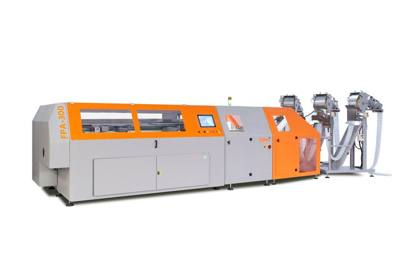
صورة توضيحية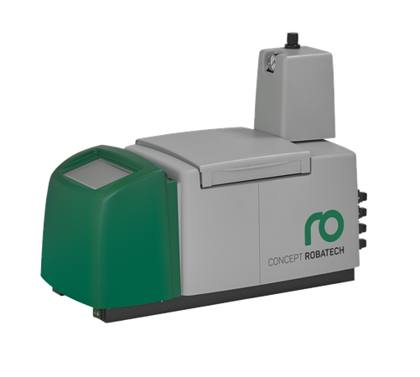
صورة توضيحيةصاهر غراء حراري (Robatech)
4 وحدات معدودة، وصاهر Robatech إضافي مذكور ضمن مكوّنات الخط.
الوزن التقديري ≈ 0.3–1.0 طن
4 قطعةرقم 3
فاكّة لفائف شرائط النوابض
فاكّة لفائف شرائط النوابض
تفك لفائف شرائط النوابض الجيبية وتغذّي بها خط التجميع.
الوزن التقديري ≈ 0.5–1.5 طن
1 مجموعة قطعرقم 1
وحدة دفع (KSM)
وحدة دفع (KSM)
تدفع صفوف النوابض عبر قسم اللصق.
الوزن التقديري ≈ 0.3–1.0 طن
1 مجموعة قطعرقم 2
مكبس اللصق
مكبس اللصق
مكبس الخط مع حواجز الحماية الخاصة به.
الوزن التقديري ≈ 1.5–4.0 طن
1 مجموعة قطعرقم 4
جسور توزيع الغراء
جسور توزيع الغراء
جسور توزيع الغراء على النوابض في الخط.
الوزن التقديري ≈ 0.5–1.5 طن
1 مجموعة قطعرقم 5
جسر مناولة علوي (Gantry) مع ملاقط
جسر مناولة علوي (Gantry) مع ملاقط
وحدة مناولة علوية مع ملاقط.
الوزن التقديري ≈ 0.8–2.0 طن
1 مجموعة قطعرقم 6
رافعة تغذية (Spühl)
رافعة تغذية (Spühl)
رافعة التغذية الخاصة بخط Spühl.
الوزن التقديري ≈ 0.5–1.5 طن
1 مجموعة قطعرقم 7
سيور الخط الناقلة
سيور الخط الناقلة
أقسام السيور الناقلة للخط.
الوزن التقديري ≈ 0.5–2.0 طن
1 مجموعة قطعرقم 8
خزائن التحكم الكهربائي
خزائن التحكم الكهربائي
خزائن التحكم الكهربائي للخط.
الوزن التقديري ≈ 0.3–0.8 طن
1 مجموعة قطعرقم 9
منصات المشغّل
منصات المشغّل
منصات وممرات المشغّل.
الوزن التقديري ≈ 0.5–1.5 طن
1 مجموعة قطعرقم 10
ألواح وحواجز الحماية
ألواح وحواجز الحماية
ألواح الحماية الخاصة بالخط.
الوزن التقديري ≈ 0.3–1.0 طن
1 مجموعة قطعرقم 11
مكوّنات أخرى للخط
مكوّنات أخرى للخط
مكوّنات إضافية مفككة من الخط.
الوزن التقديري ≈ 0.5–2.0 طن
1 مجموعة قطعرقم 12
آلات التغليف ولفّ المنصات 5 صنف · 4 قطعة · 2 مجموعة قطع
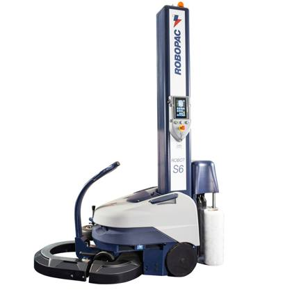
صورة توضيحيةروبوت لفّ المنصات بالفيلم (Robopac)
سنة الصنع 09/2004 و08/2005.
الوزن التقديري ≈ 0.5–0.8 طن
2 قطعةرقم 15
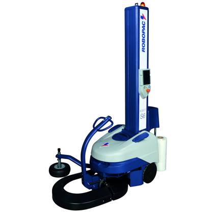
صورة توضيحيةروبوت لفّ المنصات بالفيلم (Robopac)
سنة الصنع 2018.
الوزن التقديري ≈ 0.2–0.3 طن
1 قطعةرقم 13
روبوت لفّ المنصات بالفيلم (Robopac)
الوزن التقديري ≈ 0.2–0.3 طن
1 قطعةرقم 14
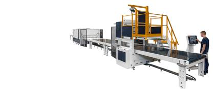
صورة توضيحيةآلة تغليف بالفيلم (KUPER)
مفككة، مع خزانة التحكم الخاصة بها.
الوزن التقديري ≈ 1.0–3.0 طن
1 مجموعة قطعرقم 16
آلة تغليف مراتب (DESCO)
آلة تغليف مراتب (DESCO)
مفككة؛ تفاصيل الموديل عند الطلب.
الوزن التقديري ≈ 1.0–3.0 طن
1 مجموعة قطعرقم 17
آلات القص والاختبار والمناولة 4 صنف · 2 قطعة · 2 مجموعة قطع
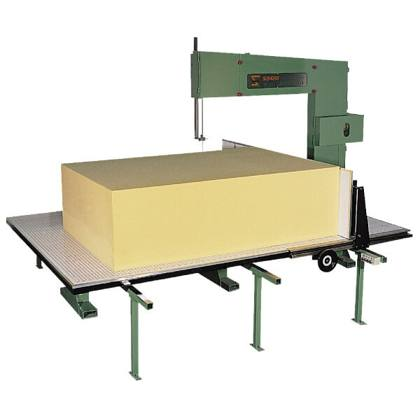
صورة توضيحيةمنشار شريطي للإسفنج
الاستخدام: قص كتل وألواح الإسفنج (PU) بمقاسات المراتب والطبقات العلوية
التصميم: منشار شريطي مستقل بشفرة شريطية لا نهائية
الجرد: مُدرج كآلة كاملة (لا كمكوّنات)، قطعة واحدة
الصانع والنوع (عمودي/أفقي) وارتفاع وعرض القص وسنة الصنع وبيانات الكهرباء: تُسجَّل عند المعاينة / عند الطلب
التصميم: منشار شريطي مستقل بشفرة شريطية لا نهائية
الجرد: مُدرج كآلة كاملة (لا كمكوّنات)، قطعة واحدة
الصانع والنوع (عمودي/أفقي) وارتفاع وعرض القص وسنة الصنع وبيانات الكهرباء: تُسجَّل عند المعاينة / عند الطلب
الوزن التقديري ≈ 0.4–1.5 طن
1 قطعةرقم 18
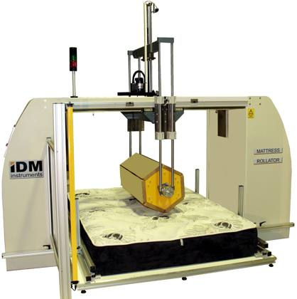
صورة توضيحيةآلة اختبار تحمّل المراتب
جهاز اختبار عمر وتحمّل المراتب.
الوزن التقديري ≈ 0.5–1.5 طن
1 قطعةرقم 19
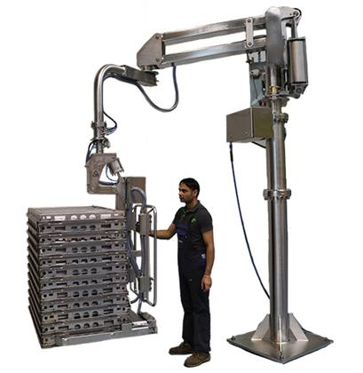
صورة توضيحيةمناول آلي (SIGMA)
الوزن التقديري ≈ 0.3–1.0 طن
1 مجموعة قطعرقم 20
آلة قماش التريكو
آلة قماش التريكو
آلة لقماش التريكو المحبوك؛ مفككة.
الوزن التقديري ≈ 0.3–1.5 طن
1 مجموعة قطعرقم 21
ماكينات قسم الخياطة 3 صنف · 32 قطعة
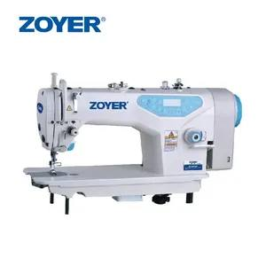
صورة توضيحيةماكينة خياطة غرزة مستقيمة
الوزن التقديري ≈ 0.9–1.7 طن
19 قطعةرقم 22
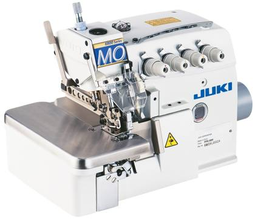
صورة توضيحيةماكينة خياطة أوفرلوك
الوزن التقديري ≈ 0.4–0.7 طن
9 قطعةرقم 23
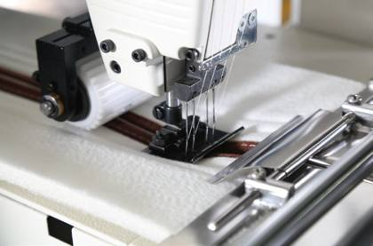
صورة توضيحيةآلة أوتوماتيكية للأشرطة والسحّابات
آلات أوتوماتيكية لأشرطة الحواف والسحّابات.
الوزن التقديري ≈ 0.6–2.0 طن
4 قطعةرقم 24
السيور الناقلة وطاولات البكرات 5 صنف · 95 قطعة
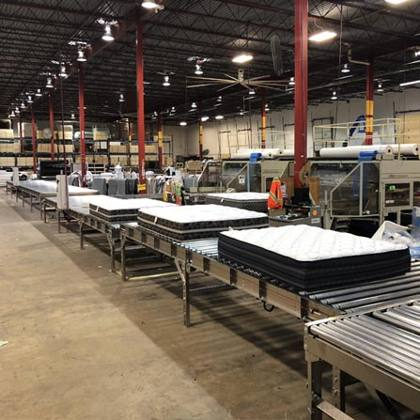
صورة توضيحيةسير ناقل للمراتب
الوزن التقديري ≈ 6–16 طن
40 قطعةرقم 25
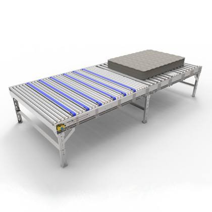
صورة توضيحيةناقل بكرات للمراتب
الوزن التقديري ≈ 3.1–9.3 طن
31 قطعةرقم 26
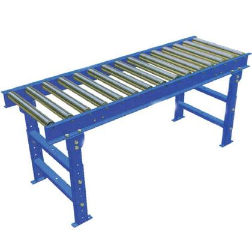
صورة توضيحيةطاولة بكرات
الوزن التقديري ≈ 0.8–2.5 طن
17 قطعةرقم 27
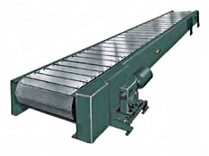
صورة توضيحيةناقل شرائحي
الوزن التقديري ≈ 0.5–2.0 طن
1 قطعةرقم 29
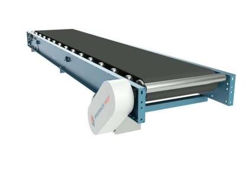
صورة توضيحيةسير ناقل لقسم الخياطة
أقسام سيور ناقلة من قسم الخياطة.
الوزن التقديري ≈ 0.3–1.2 طن
6 قطعةرقم 28
ملخص المحتويات
حسب اكتمال القطعة
| الحالة | الأصناف | الكمية (قطعة) | النسبة | الوزن التقديري |
|---|---|---|---|---|
| وحدة كاملة آلة أو وحدة مستقلة، معدودة بالقطعة. | 13 | 131 | 95.6% | ≈ 15–40 طن |
| مفككة – مكوّنات آلة مفككة إلى مكوّنات؛ تُباع كما هي دون عدّ القطع منفردة. | 16 | 6 + 15 مجموعة قطع | 4.4% | ≈ 9–28 طن |
| المجموع | 29 | 137 + 15 مجموعة قطع | 100% | ≈ 24–68 طن |
حسب نوع القطعة
| نوع القطعة | الأصناف | الكمية (قطعة) | النسبة | الوزن التقديري |
|---|---|---|---|---|
| سير ناقل للمراتب | 1 | 40 | 29.2% | ≈ 6–16 طن |
| ناقل بكرات للمراتب | 1 | 31 | 22.6% | ≈ 3.1–9.3 طن |
| ماكينة خياطة غرزة مستقيمة | 1 | 19 | 13.9% | ≈ 0.9–1.7 طن |
| طاولة بكرات | 1 | 17 | 12.4% | ≈ 0.8–2.5 طن |
| ماكينة خياطة أوفرلوك | 1 | 9 | 6.6% | ≈ 0.4–0.7 طن |
| سير ناقل لقسم الخياطة | 1 | 6 | 4.4% | ≈ 0.3–1.2 طن |
| صاهر غراء حراري (Robatech) | 1 | 4 | 2.9% | ≈ 0.3–1.0 طن |
| روبوت لفّ المنصات بالفيلم (Robopac) | 3 | 4 | 2.9% | ≈ 1.0–1.5 طن |
| آلة أوتوماتيكية للأشرطة والسحّابات | 1 | 4 | 2.9% | ≈ 0.6–2.0 طن |
| منشار شريطي للإسفنج | 1 | 1 | 0.7% | ≈ 0.4–1.5 طن |
| آلة اختبار تحمّل المراتب | 1 | 1 | 0.7% | ≈ 0.5–1.5 طن |
| ناقل شرائحي | 1 | 1 | 0.7% | ≈ 0.5–2.0 طن |
| فاكّة لفائف شرائط النوابض | 1 | 1 مجموعة قطع | – | ≈ 0.5–1.5 طن |
| وحدة دفع (KSM) | 1 | 1 مجموعة قطع | – | ≈ 0.3–1.0 طن |
| مكبس اللصق | 1 | 1 مجموعة قطع | – | ≈ 1.5–4.0 طن |
| جسور توزيع الغراء | 1 | 1 مجموعة قطع | – | ≈ 0.5–1.5 طن |
| جسر مناولة علوي (Gantry) مع ملاقط | 1 | 1 مجموعة قطع | – | ≈ 0.8–2.0 طن |
| رافعة تغذية (Spühl) | 1 | 1 مجموعة قطع | – | ≈ 0.5–1.5 طن |
| سيور الخط الناقلة | 1 | 1 مجموعة قطع | – | ≈ 0.5–2.0 طن |
| خزائن التحكم الكهربائي | 1 | 1 مجموعة قطع | – | ≈ 0.3–0.8 طن |
| منصات المشغّل | 1 | 1 مجموعة قطع | – | ≈ 0.5–1.5 طن |
| ألواح وحواجز الحماية | 1 | 1 مجموعة قطع | – | ≈ 0.3–1.0 طن |
| مكوّنات أخرى للخط | 1 | 1 مجموعة قطع | – | ≈ 0.5–2.0 طن |
| آلة تغليف بالفيلم (KUPER) | 1 | 1 مجموعة قطع | – | ≈ 1.0–3.0 طن |
| آلة تغليف مراتب (DESCO) | 1 | 1 مجموعة قطع | – | ≈ 1.0–3.0 طن |
| مناول آلي (SIGMA) | 1 | 1 مجموعة قطع | – | ≈ 0.3–1.0 طن |
| آلة قماش التريكو | 1 | 1 مجموعة قطع | – | ≈ 0.3–1.5 طن |
| المجموع | 29 | 137 + 15 مجموعة قطع | 100% | ≈ 24–68 طن |
حسب المجموعة
| المجموعة | الأصناف | الكمية (قطعة) | النسبة | الوزن التقديري |
|---|---|---|---|---|
| خط لصق النوابض الجيبية Spühl (مفكك) | 12 | 4 + 11 مجموعة قطع | 2.9% | ≈ 7–20 طن |
| آلات التغليف ولفّ المنصات | 5 | 4 + 2 مجموعة قطع | 2.9% | ≈ 3.0–7.5 طن |
| آلات القص والاختبار والمناولة | 4 | 2 + 2 مجموعة قطع | 1.5% | ≈ 1.5–5.5 طن |
| ماكينات قسم الخياطة | 3 | 32 | 23.4% | ≈ 1.9–4.4 طن |
| السيور الناقلة وطاولات البكرات | 5 | 95 | 69.3% | ≈ 11–31 طن |
| المجموع | 29 | 137 + 15 مجموعة قطع | 100% | ≈ 24–68 طن |
تقدير الشحن
| الحجم الإجمالي (تقريبي) | ≈ 160–300 م³ |
| الوزن الإجمالي (تقريبي) | ≈ 24–68 طن |
| حاوية 40 قدم High Cube | 3–5 |
| حاوية 20 قدم عادية | 6–11 |
تقديري: أوزان البنود تقديرية والإجمالي مجموعها. السيور وخط اللصق المفكك يشغلان معظم الحجم؛ وقطع الخط الثقيلة (المكبس، جسر المناولة، الرافعة) تحتاج رافعة للتحميل وقد تحتاج حاويات مفتوحة السقف أو flat-rack. الأرقام النهائية بعد قائمة تعبئة في الموقع.
السعة المعتمدة: 40 قدم HC ≈ 68 م³ / 26.5 طن، 20 قدم ≈ 28 م³ / 24 طن (تحميل عملي).
السعة المعتمدة: 40 قدم HC ≈ 68 م³ / 26.5 طن، 20 قدم ≈ 28 م³ / 24 طن (تحميل عملي).